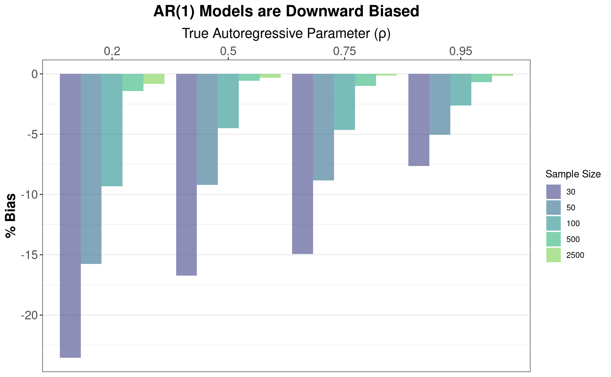
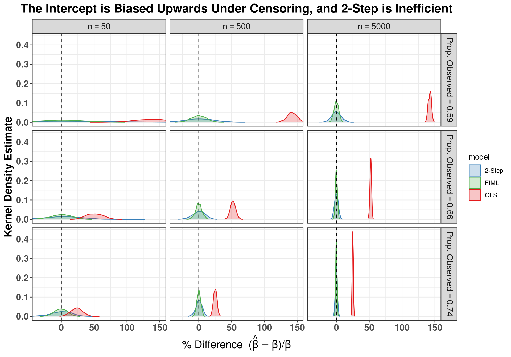
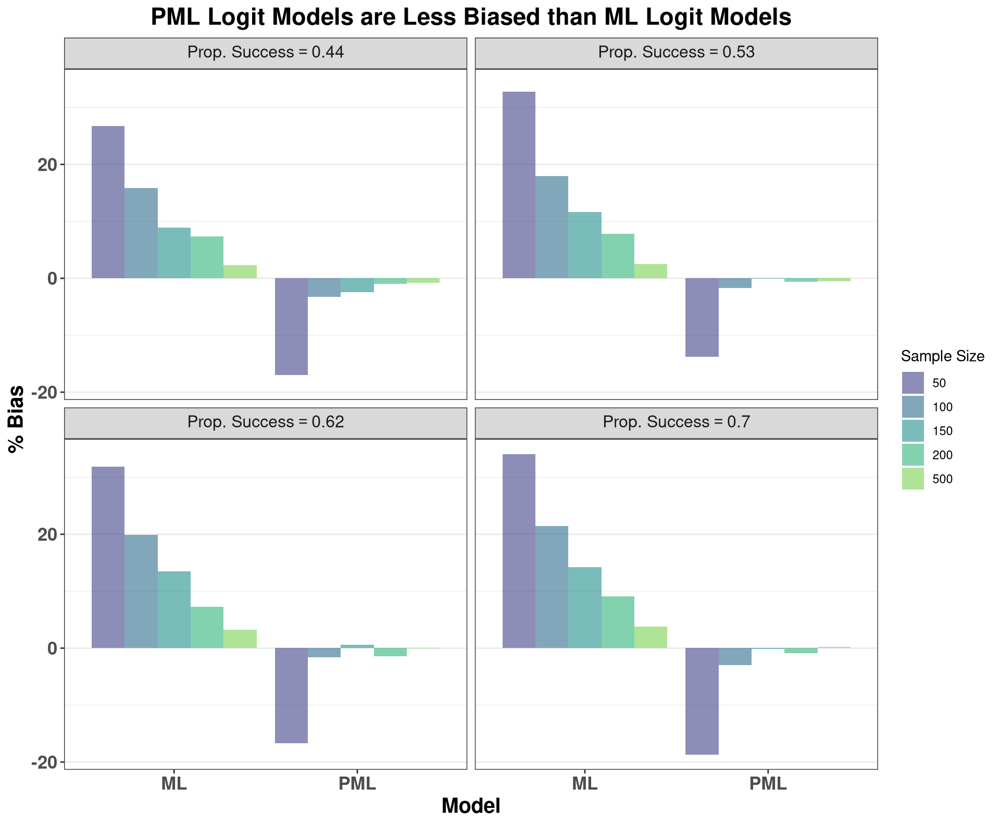
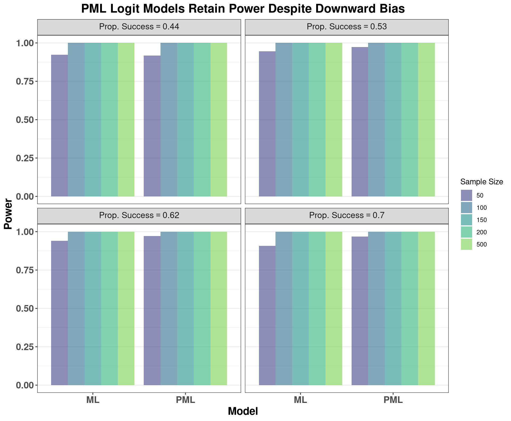

Monte Carlo Analysis in R: An in Depth Guide, with Examples
Updated: 14 May, 2022
In this guide I first review the intuition of Monte Carlo methods, and then discuss five steps to efficient, publication-quality Monte Carlo analyses using R. Generally, these steps consist of:
- Switching from serial to parallel loops
- Ensuring reproducibility by setting seeds properly for parallel tasks
- Ensuring that other parallel tasks are not competing for CPU resources
- Properly setting up simulation parameter grids
- Compartmentalizing code into simulation and estimation functions
First, I will walk through each of these five points with toy examples to drive ideas home where applicable. Finally, I will take all of this and put it together in some more serious applications.
Note that this guide applies mostly to the case of trivial parallelism, i.e., simulations that are independent of each other. However, some concepts can be extended to dependent simulations, particularly in MCMC algorithms that rely on full-conditionals. Where this is the case, I note it in the Caveats subsection of a topic.
Brief Review of Monte Carlo Methods
All of Monte Carlo analysis hinges on a Law of Large numbers. These laws effectively state that the sample mean of a random variable converges to its population mean, i.e., that the sample mean is a consistent estimator. In the context of investigating the behavior of estimators under particular conditions, these laws of large numbers imply that if we simulate a large number of estimates, then the sample mean of these estimates converges to the true mean of the estimator. With that idea in mind, we can also compute a whole host of other interesting quantities, such as the variance, the density function, or the quantile function, because all of these can be re-written as a sample mean of a random variable. Without any math, this is the primary intuition of Monte Carlo analysis: many of the quantities that we are interested in can be expressed as a sample mean of a random variable, so we know they converge to the true value of the quantity of interest due to a law of large numbers.
For example \[ \lim_{n\to\infty} \frac{1}{n}\sum_{i=1}^n X_i = \mu_x \] meaning that the sample mean converges to the population mean as the sample size tends to infinity. However, as the bold text above indicates, a whole host of other quantities converge to their true expected values, for example:
The variance:1 \[\frac{1}{n} \sum_{i=1}^n (X_i - \bar X)^2 \longrightarrow \mathrm{var}(X)\]
The CDF: \[\hat F(x) = \frac{1}{n} \sum_{i=1}^n \underset{(-\infty, x]}{\mathbb{I}}(X_i) \longrightarrow F_X(x)\]
The density function (using kernel \(K\) and bandwidth \(h\)):2 \[\hat f(x) = \frac{1}{n} \sum_{i=1}^{n} \frac{1}{h} K\left(\frac{x - X_i}{h}\right) \longrightarrow f_X(x)\]
The quantile function:3 \[\hat Q\{\hat F(x)\} = \text{inf}\left\{x:\frac{1}{n}\sum_{i=1}^{n}\underset{(-\infty, x]}{\mathbb{I}}(X_i) \geq \alpha)\right\} \longrightarrow \text{inf}(y: F(x) \geq \alpha)\]
So effectively we can simulate random variables, compute some function of those realizations, then take the mean of the resulting quantity, and the WLLN tells us that we converge to the expected value of that function.
Show me the math
To prove the WLLN, we will need a a few pieces of background information, namely Markov’s Inequality (used only to prove Chebyshev’s), Chebyshev’s inequality, and the definition of convergence in probability (note that all of this information can also be found in most math-stat textbooks, or on Wikipedia).
Markov’s Inequality: Let \(X\) be a random variable with support over the non-negative real line, i.e., \(\Pr(X \geq 0) = 1\). Then for every number \(c > 0\), \(\,\,\Pr(X \geq c) \leq \frac{\mathbb{E}(X)}{c}\).
Proof
Assuming continuous \(X\) with pdf \(f\): \[\begin{align*} \mathbb{E}(X) &= \int_0^\infty x f(x) \,dx \\ &= \int_0^c x f(x) \,dx + \int_c^\infty x f(x) \,dx \\ &\geq \int_0^c x f(x) \,dx + \int_c^\infty c f(x) \,dx \\ &= \int_0^c x f(x) \,dx + c \int_c^\infty f(x) \,dx \\ &= c \Pr(X \geq c) + \int_0^c x f(x) \,dx\\ &\geq c\Pr(X \geq c) \\[1em] \implies \Pr(X \geq c) &\leq \frac{\mathbb{E}(X)}{c} \end{align*}\]
Chebyshev’s Inequality: Let \(X\) be a random variable with finite first and second moments, \(\mu_X < \infty\) and \(\sigma^2_X < \infty\) respectively. Then for all numbers \(c > 0\), \(\,\, \Pr(|X - \mu_X| \geq c) \leq \frac{\sigma^2_X}{c^2}\)
Proof
Let \(Y = (X - \mu_X)^2\) and \(c^2 = k\), then:
\(\Pr(|X - \mu_X| \geq c) = \Pr\left[(X-\mu_X)^2 \geq c^2\right] = \Pr(Y \geq k)\), and
\(\mathbb{E}(Y) = \mathbb{E}\left[(X - \mu_X)^2\right] = \sigma^2_X\) by definition.
Then by Markov’s Inequality, we have: \[\Pr(|X - \mu_X| \geq c) = \Pr(Y \geq k) \leq \frac{\mathbb{E}(Y)}{k} = \frac{\sigma^2_X}{c^2}\]
- Convergence in Probability (to a constant): For a sequence of independent random variables \(X_n = X_1, X_2, ...\) with the same mean \(\mu_X < \infty\) and same variance \(\sigma^2_X < \infty\), and for constants \(c\) and \(\varepsilon\): if \(\lim_{n\to\infty} \Pr(|X_n - c|>\varepsilon) = 0 \hspace{1em} \forall \hspace{1em} \varepsilon > 0\) then \(\,\,X_n \overset{p}{\longrightarrow} c\).
The WLLN then states that
\[\begin{equation*}\frac{1}{n} \sum_{i=1}^{n} X_i \overset{p}{\longrightarrow} \mu_X \end{equation*}\]
which can be generalized to functions \(g\) of \(X\):
\[\begin{equation*} \lim_{n\to\infty} \frac{1}{n}\sum_{i=1}^n g(X_i) \overset{p}\longrightarrow \mathbb{E}[g(X_n)] = \int_{X} g(x) \,\, \mathrm dF_X(x) \end{equation*}\]
for random variables \(X_i \overset{iid}{\sim} f_X, \,\, i\in 1,2,...,n\), and (almost) any function \(g\). This effectively says that the sample average of nearly any function of the data converges in probability to the true expected value.
This is proven using Chebyshevs inquality. First, by the linearity of expectation, we know that \(\mathbb{E}(\bar X) = \mu_X\) and \(\mathrm{var}(\bar X) = \sigma^2_X/n\). Then,
\[\begin{align*} \Pr(|\bar X - \mu_X| \geq \varepsilon) &\leq \frac{\sigma^2_X}{n\varepsilon^2} \\[1ex] \implies \lim_{n\to\infty} \Pr(|\bar X - \mu_X| \geq \varepsilon) &\leq \lim_{n\to\infty} \frac{\sigma^2_X}{n\varepsilon^2} \\[1em] &= 0 \end{align*}\] where this last equality follows because \(0 \leq \lim_{n\to\infty} \Pr(|\bar X - \mu_X| \geq \varepsilon) \leq 0\) by the definition of a density function for the lower bound, which concludes the proof.
Simulations: Serial vs Parallel
As implied by the review of Monte Carlo analysis, simulations will involve a great number of iterations in order to obtain a sufficiently large sample to be averaged over, such that the error in our approxmiation is small. Unfortunately, R is single-threaded by default, meaning everything that you do in R is executed on a single CPU on your computer. So even if you have a quad-core processor that has 8 CPUs due to multi-threading, only one of these 8 potential processes is being used by R by default. However, most Monte Carlo analyses would theoretically benefit from being able to compute quantities simultaneously: if we want to compute a bunch of sample means that are independent of eachother, then why not compute 8 means at a time, rather than one? Naturally then, implementing Monte Carlo analyses in parallel will be the first step to obtaining results efficiently. There are exceptions to this rule (e.g., reserving computing resources for other tasks, parallel overhead making things slower), but if the reason you are not using parallel processing is simply because you do not know how, then I’ll walk you through a few approaches here.
For going parallel in R, there are essentially two options:
Using
foreachloops, which are similar, yet distinct from the typicalforloopUsing the parallelized
applyfamily of functions, e.g.,parLapply,parApply, and friends.
I’ve used both approaches extensively (in the past I only used the
apply approach), and strongly prefer the
foreach approach at this point for a few reasons:
It tends to be more intuitive as its similar to
forloops in appearanceTends to be easier to debug (in my opinion)
Doesn’t require nested function calls for complicated simulations
Permits nested parallel looping
Can be more memory efficient
For these reasons, I won’t be covering the apply family
of functions here. I may eventually extend the principles and examples
below to the apply family, but for now we’ll focus on
foreach.
Differences between foreach and for
Before diving in, note that this is only a quick introduction to
foreach. We’ll go over how it differs from for
loops and some of the key arguments, but if you want to learn more, I
highly recommend taking a look at its vignette.
If you’re more of a DataCamp or otherwise type of person, there is an
entire course on parallel
processing in R available through them (I am not affiliated with
DataCamp, nor do I receive anything from them for linking this). There
are also more in-depth resources on parallel processing in R available
here,
here,
and here,
although Googling around will definitely yield droves of additional
content.
To see how foreach works, its useful to compare and
contrast it with a typical for loop. Suppose we just wanted
to add 1 to each element in a vector, and for some reason we did this
using a for loop in R (rather than leveraging vectorization). We might
write the following:
### for loop
vec = seq(1, 5)
out_for = vector()
for(i in seq_along(vec))
out_for[i] = vec[i] + 1
print(out_for)## [1] 2 3 4 5 6
Then, using the foreach package, an equivalent loop
could be written like so:
### foreach
library(foreach)
vec = seq(1, 5)
out_foreach =
foreach(i = seq_along(vec),
.combine = "c"
) %do% {
return(vec[i] + 1)
}
print(out_foreach)## [1] 2 3 4 5 6
Despite having a somewhat similar appearance to the for
loop, foreach loops are different because they are
functions, while for loops are not.
In fact, foreach loops are composed of at least two
functions, and one expression-class object:
The first function is a bit obvious, its a call to
foreach(...).The second function is actually the infix function,
%do%, or as we’ll see later,%dopar%or%dorng%.The
expression-class object is the loop code inside the curly braces{...}, and can be thought of as a string for our purposes.
We’ll start with (2), the %do% infix function. Notice
its similar appearance to the matrix multiplication operator,
%*%. Just as the %*% matrix multiplication
operator takes its arguments on either side, so does the
%do% or %dopar% operator (or any other
arbitrary infix function). Thus, we can conclude that the call
to foreach(...) on the left-hand side, and the set of loop
instructions on the right-hand side between the curly braces
{...} are both arguments to the %do%
function.
Moving to the call to foreach(...) on the left-hand side
of %do%, we’ve just learned that this function (or rather,
the return value of this function) is an argument to the
%do% operator. Its reasonable to ask what the
foreach() function returns, then, as its return value is an
input to another function. Lets take a look:
fe_call = foreach(i = 1:3)
str(fe_call)## List of 11
## $ args : language (1:3)()
## $ argnames : chr "i"
## $ evalenv :<environment: R_GlobalEnv>
## $ specified : chr(0)
## $ combineInfo :List of 7
## ..$ fun :function (a, ...)
## ..$ in.order : logi TRUE
## ..$ has.init : logi TRUE
## ..$ init : language list()
## ..$ final : NULL
## ..$ multi.combine: logi TRUE
## ..$ max.combine : num 100
## $ errorHandling: chr "stop"
## $ packages : NULL
## $ export : NULL
## $ noexport : NULL
## $ options : list()
## $ verbose : logi FALSE
## - attr(*, "class")= chr "foreach"
So foreach() returns a list, with a whole bunch of named
elements. We’ll touch on some of these later on, but for now you can
roughly think of foreach() as being the same as the serial
case when we call for(i in something): it is creating an
object to be iterated over. In reality things are a bit more complicated
than that, but the details are not too important here. It is enough to
know that foreach() is a function, and it returns an object
that is in some way useful for iterating and executing a loop in
parallel. The results of calling this foreach(...) function
are then used as the inputs on the left-hand side of
%do%.
Finally, on the right-hand side of %do% we have an
expression-class object, which can just be thought of as
our loop code. But, because these instructions will be executed on
several CPUs simultaneously, we need to send them off to each core
first, and then execute the instructions and return their
collective results. This is why foreach loops are actually
function calls, because they have to send off a set of instructions in a
unified way to several child processes for execution, keep track of that
execution, combine the results, and return them in a sensible way. In
contrast, for loops are running on a single process, so the
instructions can just be executed on that process in real-time.
If any of this is confusing, the main takeaway is that
foreach loops are actually functions. Since functions have
a return value, we stored the results in the
out_foreach object, and gave the foreach loop
an explicit return() call at the end. This is because we
send off our code to several R processes, and each process needs to know
what to be working on, and what to return.
Making foreach Run in Parallel
Now that you have the basics of how foreach and
for differ, we can move on to making things work in
parallel. The above toy example is in fact running serially in both the
foreach and for loops. However, to make the
foreach loop run in parallel requires trivial alterations
to the code above:
Tell R how many cores to use. This should be one less than the max if using R-studio, so that R-studio still has resources to run.
Create a cluster and register it as a parallel back-end using the
doParallelpackage.Change
%do%to%dopar%(though later we’ll see that a better alternative is actually%dorng%).Shut down the parallel backend (this is extremely important for PC longevity).
Using the same example from the previous section of adding 1 to each element of a vector, each of these steps for going parallel are implemented in the code below.
### 0. Need the doParallel package for this
library(doParallel)
### 1. Tell number of cores to use (one less than max, if using Rstudio)
ncores = parallel::detectCores() - 1
### 2. Create cluster, and register parallel backend
cl = makeCluster(ncores)
registerDoParallel(cl)
### 3. Change `%do%` to `%dopar%`
out_foreach = foreach(i = seq_along(vec),
.combine = "c"
) %dopar% {
return(vec[i] + 1)
}
### 4.shut down the cluster DONT FORGET THIS
stopCluster(cl)
Important foreach Parameters
Although this is certainly not a guide on the foreach
package (see the previous
links for more detail on the package), there are a few parameters
worth discussing here.
.combine— This is a function that tellsforeachhow to combine the results, e.g.,list,c(for concatenate),rbind, etc. (or some custom function). I typically leave thisNULL, which returns the results in a list. I do this because combining results takes time, and I don’t necessarily want to take that time immediately after simulations complete..inorder— A logical value that indicates whether the results should be combined in the order they were submitted to the workers. I always set this toFALSEbecause I don’t care about the ordering, I just want my results as fast as possible. NOTE: the default isTRUE, meaning you combine in order by default..multicombine— Logical value indicating whether the.combinefunction can take more than 2 arguments. For most conventional functions, e.g.,list,cbind,rbind,c, this should beTRUE. This matters because if the.combinefunction has more than 2 arguments, then thedo.callfunction can be used to call it on a list, which will tend to be faster than running a loop to combine results iteratively. Essentially, be sure to set this toTRUEif using the conventional functions listed here..maxcombine— This tellsforeachhow many sets of results to combine at one time. The default is 100 results at a time, which is going to be painfully slow for any modest set of Monte Carlo results. I tend to set this to the total number of expected results, meaning thatforeachshould combine them all at once. With modern hardware this shouldn’t be too problematic, but I stand to be corrected..errorhandling— Tells how to handle errors on each thread. When I’m debugging, I typically set this to"stop", so that errors kill the simulations. However, once I know there are no issues, I set this to"pass"so that errors are ignored, but their message is kept in the results. For complicated problems this is useful because there are instances where an algorithm may not converge due to random chance in the data generating process. But, we don’t want to kill all simulations when that happens, we want to just keep going but know that for that particular iteration the algorithm did not converge..packages— This tellsforeachwhat packages to export to each parallel process. Remember,foreachspins up a separate instance of R on each core, so we have to tell these cores what packages to load. We do so using the.packagesparameter..export— This tellsforeachwhich objects from the global environment to export to each process. Again, because separate instances of R are created, we need to ensure that each process has access to all the relevant objects. Note: This is less relevant when using aFORKcluster, as detailed in the next section.
FORK or PSOCK?
When spinning up a parallel cluster, e.g., using
makeCluster(cl) as we did previously, there is a
type parameter that controls the type of cluster that we
create, which is one of either "FORK" or
"PSOCK". The default is "PSOCK", but this can
be set, e.g. by calling
makeCluster(your_cluster_object, type = "FORK").
The details on each cluster type are as follows:
"FORK"— This type of cluster duplicates the master process on each child process, but allows them all to access the same shared global environment from the master process. Think of the master process as the process that you are interacting with in R where you type your code. So, multiple R processes are spawned on your cores, but they all access the same single global environment. This minimizes parallel overhead communication between the processes. NOTE: This type of cluster is only available on UNIX-alike machines (i.e., GNU-Linux, Mac), so Windows users cannot use this cluster type."PSOCK"— This type of cluster does not have a shared environment, new global environments are created for each of the child processes. So, we have to tell the master process which objects to export to its children using the.exportoption as mentioned in the previous section, because entirely new (and empty) environments are created for each child process.
Because of the copying and ensuing communication required for
"PSOCK" clusters, some estimates put "FORKS"
as being roughly
40% faster than socket clusters. Again though, if you’re using
Windows, you won’t be able to leverage this forking speed bonus.
Here’s a useful bit of code that will determine the cluster type based on what operating system you’re using. I use a rendition of this code for every set of Monte Carlos that I do, as I’d like to have a FORK cluster whenever possible, and I don’t want to have to change code whenever I move to a computer with a different OS.
### Dynamically decide cluster type based on OS type
ncpus = parallel::detectCores() - 1
type = if(.Platform$OS.type == 'unix')
'FORK'
else
'PSOCK'
cl = makeCluster(ncpus, type = type)As the help
files indicate, .Platform$OS.type will return
"unix" for both Linux and Mac (as Mac is
unix-like).
What if I’m on Windows and I want to FORK…
If you would like to be able to fork but are on Windows, then dual-booting a Linux OS alongside your Windows installation is a free way to do so while keeping your Windows installation intact. Its also a great way to start learning about the Linux system, as this is often the system of choice in many industrial data science positions. The purpose of this guide is not to give instruction on how to do this, but a good starting Linux distribution is Linux Mint Cinnamon Edition, which is built on top of the popular Debian-based Ubuntu. If this interests you, I suggest reading up on dual-booting Windows with Linux, and starting with either of the two distributions listed here. After some more experience with Linux, the Arch-based Manjaro KDE is great, and is in fact what I use daily. Finally note that most popular Linux distributions are like any other operating system in that they have a graphical user interface and can be completely navigated using point-and-click actions, in case you mistakenly think that using Linux implies knowing a bunch about computer science.
An alternative to dual-booting is to utilize the Windows subsystem for Linux, although this approach is command line interface (CLI) only, meaning there is no point-and-click functionality. So unless you’re already familiar with Linux, this may be too much of a hassle.
Seed Setting and Parallelism
If you’re running simulations, you probably want to be able to
reproduce them, either on your own machine at a later date, or on
another machine. However, if you’ve now implemented parallel processing
as suggested using %dopar%, setting your seed is no
longer as straightforward as in the serial case.
For example, lets simulate some random variables using both a serial loop and parallel loop, and set the seed before hand. We’d expect that the results are the same, but this turns out to be false. First, serially:
### Serially
serial_1 = serial_2 = c()
set.seed(123)
for(i in 1:3)
serial_1[i] = rnorm(1)
set.seed(123)
for(i in 1:3)
serial_2[i] = rnorm(1)
identical(serial_1, serial_2)## [1] TRUEwhich produces two vectors of the exact same numbers, as we’d expect given the above code.
However, when we implement the “equivalent” in parallel (notice how the infix property becomes more apparent in the code below, too):
### Parallel
ncores = 3
cl = makeCluster(ncores)
registerDoParallel(cl)
set.seed(123)
parallel_1 =
foreach(i = 1:3, .combine = c) %dopar% { rnorm(1) }
set.seed(123)
parallel_2 =
foreach(i = 1:3, .combine = c) %dopar% { rnorm(1) }
stopCluster(cl)
identical(parallel_1, parallel_2)## [1] FALSEwe end up with results which are not the same, despite setting the seed as one would typically do in the serial case. The details of why this is happening are technical and mostly unimportant; what is important is that there are some simple solutions.
Option 1: doRNG
The simplest solution is to use the doRNG
package. There are two ways to use the package to reproduce simulation
results.
doRNGMethod 1: Set your seed as usual, and replace%dopar%with%dorng%:
### set.seed and %dorng%
library(doRNG)
ncores = 3
cl = makeCluster(ncores)
registerDoParallel(cl)
set.seed(123)
parallel_1 =
foreach(i = 1:3, .combine = c) %dorng% { rnorm(1) }
set.seed(123)
parallel_2 =
foreach(i = 1:3, .combine = c) %dorng% { rnorm(1) }
stopCluster(cl)
identical(parallel_1, parallel_2)## [1] TRUE
2. doRNG Method 2: Set your seed using
registerDoRNG() instead, then use %dopar% as
usual:
### doRNG backend, %dopar%
ncores = 3
cl = makeCluster(ncores)
registerDoParallel(cl)
registerDoRNG(123)
parallel_1 =
foreach(i = 1:3, .combine = c) %dopar% { rnorm(1) }
registerDoRNG(123)
parallel_2 =
foreach(i = 1:3, .combine = c) %dopar% { rnorm(1) }
stopCluster(cl)
identical(parallel_1, parallel_2)## [1] TRUEBoth approaches result in reproducible parallel loops.
Option 2: Iteration-level Seeds
A bit of a hacky alternative to doRNG is to simply set
the seed for each iteration. Remember from earlier that the instructions
set on the right-hand side of %dopar% are passed to each
core. Well, if every iteration passed to a core has a unique seed, then
any time we run the loops, the same results will obtain. To do this
we
Set an “outer” seed in the traditional way, i.e., using
set.seed()outside theforeachblock.sample()“inner” seeds to be used in each iteration. The number of inner seeds is equal to the number of simulations/iterations (i.e., the max of your iteration index). Note that this sampling will always produce the same inner seeds, because we’ve set our outer seed in step (1).Set the seed within your simulation code using
set.seed(), but using an indexed inner seed, where the index is the iteration number.
To make this more clear:
ncores = 3
nsims = 10
cl = makeCluster(ncores)
registerDoParallel(cl)
set.seed(123) # Set seed in the usual way
inner_seeds = sample( # Sample nsims-many inner seeds
x = 999999,
size = nsims
)
parallel_1 =
foreach(i = 1:nsims,
.combine = c
) %dopar% {
set.seed(inner_seeds[i]) # Set seed for each iteration, using indexed seed
rnorm(1)
}
parallel_2 =
foreach(i = 1:nsims,
.combine = c
) %dopar% {
set.seed(inner_seeds[i])
rnorm(1)
}
stopCluster(cl)
length(unique(inner_seeds)) == nsims## [1] TRUEidentical(parallel_1, parallel_2)## [1] TRUEAs the code length(unique(inner_seeds)) == nsims tells
us, this isn’t setting the same exact seed on all cores. We made a
vector of distinct seeds, inner_seeds, and each simulation
uses one of these distinct seeds before executing its instructions. You
can think of this as setting a different seed across a bunch of
different R sessions, and then combining the results; however, the
universe of inner seeds to be used on each of these sessions remains the
same, and therefore so do the results across runs.
Now this is of course a bit hacky, and is clearly more complex than
using doRNG, but this approach does have practical
utility. Namely, if you ever need nested parallel loops (using
the %:% nesting operator detailed in the foreach
documentation), then unfortunately the %dorng% backend
is not supported. In other words, if you’d like nested, parallel loops,
you will not be able to use doRNG to ensure
reproducibility. In this case, the only way I have found to successfully
reproduce simulations is the above, iteration-level seed-setting
approach.
Thread Competition
Now we are running loops in parallel, and our pseudo-random numbers are reproducible as we would want. However, there is a potential lurking issue that will completely tank any simulations structured as we have here: other multi-threaded/parallel tasks competing for CPU resources. In other words, if R is trying to execute simulations in parallel while also trying to execute some other task in parallel simultaneously, often times your R-session will hang and eventually crash.
BLAS/LAPACK-Induced Deadlock
So why would anyone be doing multiple forms of parallel processing
simultaneously? The most common reason for this is when you are using
optimized BLAS/LAPACK libraries while executing linear algebra-heavy
simulations. This includes libraries like Open BLAS, Intel’s
MKL, AMD’s
Math Library, Apple’s
Accelerate or ATLAS
BLAS. In addition to having superior algorithms that are optimized
for your specific hardware, these libraries often times have
multi-threaded matrix operations; i.e., they do common matrix operations
in parallel, such as matrix multiplication, inversion, etc.4 Thus, if
you are using these libraries and forget to disable their inherent
multi-threading, they will compete with foreach when
accessing your CPUs, which will ultimately hang your system. For
example, if your computer has 8 threads, and you tell R to give
foreach 7 of them, but MKL reserves 4 of them for matrix
operations, suddenly you’re trying to access \(7 \times 4 = 28\) threads when you only
have 8 (each of the 7 child processes will be linked to MKL, which
reserves 4 threads). The only option is to use the same thread for
multiple tasks simultaneously, but this isn’t possible so the computer
hangs. This is known as deadlock in
multi-threaded computing, with a particularly egregious case caused by
FORK bombs.
To check if your PC is running multi-threaded matrix operations, use
the RhpcBLASctl
package:
library(RhpcBLASctl)
blas_get_num_procs()## [1] 12omp_get_num_procs()## [1] 20If either of these results is greater than 1, then you have multithreading enabled. We won’t delve into the differences between BLAS and OMP here; suffice it so say that you want both of these at 1 for single-threaded matrix operations. IF YOU USE MICROSOFT’S R-OPEN, then you probably have MKL enabled as your BLAS/LAPACK library, and multi-threading is likely enabled by default.
Alternatively, you can check on the name of your BLAS library, which will tell you at least if its not the default library:
sessionInfo()[c("BLAS", "LAPACK")]## $BLAS
## [1] "/opt/intel/mkl/lib/intel64/libmkl_gf_lp64.so"
##
## $LAPACK
## [1] "/opt/intel/mkl/lib/intel64/libmkl_gf_lp64.so"but this isn’t conclusive, as it merely tells us that I’m using MKL,
not that MKL is currently set to use multiple threads. For that reason,
the RhpcBLASctl method is probably superior.
Multi-threaded Packages
In addition to multi-threaded matrix operations, there are other R
packages that are multi-threaded by default and will therefore compete
for CPU resources. The number one culprit here is probably data.table.
However, other machine learning libraries have the option for
multithreading as well, such as caret, and glmnet.
To my knowledge neither of these last two are multithreaded by default,
so this only becomes a problem if you accidentally tell them to use more
than one CPU. In any case, if you run some simulations and notice that
your CPU usage is at zero and you know that you’re not multi-threading
for BLAS/LAPACK, then I would do a hard restart on you computer. If the
problem persists, I would check into the details of the packages you’re
using as its likely that one is multi-threaded by default.
Solving Thread Competition
Fortunately, it is extremely easy to solve thread competition.
To disable multi-threaded matrix operations, use the
RhpcBLASctlpackage, and be sure to disable multi-threading in your loop code as seen below, not just outside of it:### disable in parent process library(RhpcBLASctl) library(doRNG) blas_set_num_threads(1) omp_set_num_threads(1) ncores = 3 nsims = 3 cl = makeCluster(ncores) registerDoParallel(cl) set.seed(123) ### disable in child processes foreach(i = 1:nsims, .packages = "RhpcBLASctl" # Dont forget to export RhpcBLASCtl pkg ) %dorng% { library(RhpcBLASctl) blas_set_num_threads(1) # DISABLE WITHIN LOOP HERE omp_set_num_threads(1) rnorm(1) } stopCluster(cl)To disable packaged multithreading, you’ll just have to read the documentation for that package to determine how to set the max number of threads to 1. For example, browsing the documentation for
data.tableimmediately tells us that thesetDTthreads()function does what we want.
Caveats
There are a few qualifiers worth mentioning here.
If you aren’t using matrix operations in your parallel tasks, then multi-threaded matrix operations shouldn’t cause problems in theory, because they aren’t even being attempted. However, if they aren’t happening, it also doesn’t hurt to just set the number of threads to 1. Just make sure the change it back if you want to leverage that efficiency in your R session later on.
If you aren’t using the multi-threaded R packages, perhaps it goes without saying that you don’t need to worry about them competing for resources in this way.
It is possible that some combination of matrix or package multithreading along with parallel simulations is “optimal,” in the sense that its faster. For example, if you have 16 threads you could assign 5 threads to
foreach, and then have each of those processes use 2 threads for matrix operations. You’d then have 15 threads in use, plus one for R-studio or other tasks on reserve. Perhaps this would be faster overall than single-threaded matrix operations on 15 simulation processes. I haven’t done any testing for this, so I have no idea whether or when this would be better. At the extreme, it could in theory be better to use a single threaded simulation (i.e., serial simulations), while using all cores for matrix operations. I imagine that is an edge case, but again I cannot rule it out as I have not investigated this extensively. In any case, I’m lazy, so I just disable multi-threading on all packages and matrix operations, and give all my threads toforeach.
Parameter Grids
Now that we’re working in parallel without suffering thread competition and can consistently reproduce our results, the next step is to create a grid of parameters for our simulations, i.e., the points in the parameter space at which we’ll investigate the behavior of our chosen procedure. These will of course be specific to the process under study, but its worth showing a general way to go about creating this grid.
As a contrived toy example, suppose our task involves normal random variables with different means and variances. Specifically, we are interested in \(X \sim \mathcal{N}\left(\mu \in \{0, -1 \}, \,\,\sigma^2 \in \{1, 3\}\right)\); that is, we’ll vary the mean and variance of some random variable \(X\). Additionally, we want to investigate how sample size affects the properties of these random draws. Right now its not important why we’re doing this or what \(X\) will be used for, only that we want random variables with every pairwise combination of these parameter values.
To do so, we create vectors of these parameters, and then use
expand.grid() to get the pairwise combinations:
mu = c(0, -1)
sig2 = c(1, 3)
n = c(5, 10)
(grid = expand.grid(mu = mu, sig2 = sig2, n = n))## mu sig2 n
## 1 0 1 5
## 2 -1 1 5
## 3 0 3 5
## 4 -1 3 5
## 5 0 1 10
## 6 -1 1 10
## 7 0 3 10
## 8 -1 3 10So now we have the parameters we need for our simulations in a nice tabular format, which we can then loop over when creating data from our chosen data generating process. For example (omitting the back-end setup, etc. for clarity):
# SETUP OMITTED FOR SIMPLICITY. SEE EXAMPLES SECTION FOR FULL SETUP.
out = foreach(i = 1:nrow(grid)
) %dopar% {
rnorm( n = grid[i, "n"],
mean = grid[i, "mu"],
sd = sqrt(grid[i, "sig2"])
)
}
head(out)## [[1]]
## [1] 0.8005543 1.1902066 -1.6895557 1.2394959 -0.1089660
##
## [[2]]
## [1] -1.1172420 -0.8169174 0.2805549 -2.7272706 0.6901844
##
## [[3]]
## [1] 0.8726288 4.3792074 0.9510634 0.4125969 -1.8167362
##
## [[4]]
## [1] 1.242596 0.429877 -1.096451 -2.358590 -2.270465
##
## [[5]]
## [1] -0.21586539 -0.33491276 -1.08569914 -0.08542326 1.07061054 -0.14539355
## [7] -1.16554485 -0.81851572 0.68493608 -0.32005642
##
## [[6]]
## [1] -2.3115224 -1.5996083 -1.1294107 -0.1132639 -1.1513960 -0.6702088
## [7] -4.2273228 -1.7717918 -0.7134514 -2.2205120The main point here is that we’ve created a grid of all
unique pairwise parameter combinations, and we’ve looped over each row
of that grid to then get random numbers using every
possible parameter combination. In this way we’ve ensured that we
simulate data from each of the desired parameterizations, all without
having to manually specify the parameters, and without having to do any
sort of nested looping,
e.g. for(i in mu){ for j in sig2 {...}}. This is akin to a
grid-search in optimization, although here we’re not searching for an
optimal set of parameters, we’re investigating the behavior of some
procedure at pre-defined grid points in the parameter space.
Extending Grids to Multiple Simulations
Of course, we’ve only done one simulation here. That is, at
each set of parameter values, we have one iteration. But in Monte Carlo
analysis, we want some large number of simulations in order to see how
things are behaving, so we’ll need to replicate this grid. Suppose we
want 2 simulations instead of 1, then we can use do.call(),
cbind.data.frame, and replicate() together to
get a grid with each grid point appearing twice, so that we’ll have two
simulations at that point instead of one:
nsims = 2
mu = c(0, -1)
sig2 = c(1, 3)
n = c(5, 10)
grid = expand.grid(mu = mu, sig2 = sig2, n = n)
(grid_multi = do.call(rbind.data.frame, replicate(nsims, grid, simplify=F)))## mu sig2 n
## 1 0 1 5
## 2 -1 1 5
## 3 0 3 5
## 4 -1 3 5
## 5 0 1 10
## 6 -1 1 10
## 7 0 3 10
## 8 -1 3 10
## 9 0 1 5
## 10 -1 1 5
## 11 0 3 5
## 12 -1 3 5
## 13 0 1 10
## 14 -1 1 10
## 15 0 3 10
## 16 -1 3 10And we can now see that each grid point appears twice, so if we were
to loop over this in the same as as we did previously, we produce
results for each parameter combination twice. Inductively then, we know
that for arbitrary values of nsims, we’ll get
nsims-many results for each parameter combination, which is
precisely what we want in Monte Carlo analysis.
Briefly explaining the above code, replicate() is
replicating the grid dataframe nsims-many
times, and storing these replicates in a list. Then,
do.call calls the rbind.data.frame function
with each element of the replicated list as its arguments.
Mathematically, do.call is effectively executing \(f(x_1, x_2, ..., x_{nsims})\) where \(f()\) is rbind.data.frame, and
each x_j is an element of a list. In this case, the
list-elements are all the original, single-simulation grid
object.
Why not use a nested loop?
One potential question is why not use a nested loop instead of
replicating each grid point nsims-many times. That is, we
could just repeatedly loop over the original grid object,
rather than replicating it several times, like so (omitting the back-end
setup, etc. for clarity):
# SETUP OMITTED FOR CLARITY. SEE ENDING EXAMPLES FOR FULL SETUP.
# Make grid WITHOUT REPLICATING
mu = c(0, -1)
sig2 = c(1, 1.5)
n = c(5, 10)
grid = expand.grid(mu = mu, sig2 = sig2, n = n)
# make number of simulations a variable for looping
nsims = 2
out = foreach(i = 1:nrow(grid)
) %dopar% {
res = list()
# create an inner, nested loop that repeatedly simulates from a gridpoint
# instead of replicating the gridpoint and looping over the replicates
for(j in seq_len(nsims)){
res[[j]] = rnorm( n = grid[i, "n"],
mean = grid[i, "mu"],
sd = sqrt(grid[i, "sig2"])
)
}
return(res)
}
out[1:3]## [[1]]
## [[1]][[1]]
## [1] -0.4682005 -0.7729782 2.1499193 -1.3343536 0.4958705
##
## [[1]][[2]]
## [1] 1.2339762 0.6343621 0.4120223 0.7935853 -0.1524106
##
##
## [[2]]
## [[2]][[1]]
## [1] -1.2288958 -1.9007918 -1.7350262 -2.4276858 -0.3807165
##
## [[2]][[2]]
## [1] -1.006198 -1.685707 -1.279334 -1.782730 -1.778997
##
##
## [[3]]
## [[3]][[1]]
## [1] -0.4590345 -0.3911759 0.1035445 -0.9411841 -0.7665812
##
## [[3]][[2]]
## [1] -1.10333696 0.81289828 0.36776531 0.09168051 0.25275390The key difference here is that we create a single set of grid points
without duplication (i.e., without using replicate()), and
then create an inner loop— for(j in seq_len(nsims))—that
repeatedly uses these grid points nsims-many times. An
obvious advantage of the nested-loop approach is that it conserves
memory; the grid is not replicated, so each core only stores a copy of
the original, single-simulation grid. The memory gains are somewhat
trivial though due to how R stores lists in memory, but that is a
technical aside that I won’t delve into now (see this page for
more info).
However, the major disadvantage of the nested-loop approach
is load balancing. In most real-world applications we will be
varying the sample size of our procedure, and by much more than we are
doing so here; i.e., we’ll estimate some model at small and large sample
sizes. In doing so, the nested-loop approach becomes problematic for
load balancing purposes, because the CPUs that have the small sample
sizes will take way less time to complete their inner, nested loop
(recall, the set of instructions on the right-hand side of
%dopar% are executed on a single CPU). Eventually then, the
CPUs with the large sample sizes will still be running their nested,
inner-loops while the CPUs that had the smaller sample sizes have
completed their tasks and are sitting idle doing nothing.
Caveats
In most cases, the replicated-grid approach will be better, often times by several hours when compared with the parallel-outer, serial-inner approach. However, there are at least two instances where this won’t hold.
If the run-time of a single simulation is small, e.g., < 1 second, it is possible that the overhead from parallelizing at the simulation level—rather than the grid-point level—will exceed the gains from parallelizing. This is known as parallel slow down. It’s possible to mitigate this by using prescheduling, but even this won’t always fix the issue if single simulations take a very small amount of time. Prescheduling splits the total number of tasks into chunks (at random) and assigns these tasks to each CPU. So if you allocate 10 CPUs, and there are 100 tasks, the computer will randomly select 10 tasks to assign to each CPU. Without prescheduling, when a CPU finishes a task, it will communicate with the other CPUs in the network or the parent process and determine what tasks still need doing, and then it does one of the ones that remains. So, by prescheduling we reduce some of this communication overhead. There are advantages and disadvantages to prescheduling that I won’t go into here, but a general rule is if your tasks are numerous and require little time individually, use prescheduling, otherwise don’t. To enable presheduling in
foreach, do the following:foreach(i = 1:nsims, .options.multicore = list(preschedule = TRUE)) %dorng% { [...code...] }If you are doing some form of Markov Chain Monte Carlo (MCMC), rather than traditional Monte Carlo analysis, the nested loop approach will generally become necessary. For things like the Metropolis-Hastings algorithm and its derivatives (e.g., Metropolis, Gibbs), we are typically sampling from a full-conditional distribution that depends on some previous iteration. So parallelization here would occur at the chain-level, and within each chain we would have serial loops to sample from the full conditionals. The gridding approach would also not make as much sense anyway, as the proposal parameters are not fixed ex-ante aside from the starting values.
Using Functions Properly
At this point we’ve set up our environment, and are ready to start
with the actual simulations. To recap, we are using foreach
combined with %dopar% or %dorng% for
parallelism, we’ve ensured reproducability, we have handled thread
competition with other parallel processes, and now we have a grid of
parameter values at which to investigate the behavior of some procedure,
with each grid value appearing once for each simulation iteration. Now
we can make some functions that will automate the simulation and
transformation of our data.
R is an object oriented, functional programming language. We should leverage both of these facts to make our simulations easier to understand, implement, and debug. At a minimum, this will consist of having two functions:
A simulation function that creates the data to be further analyzed.
An estimation/analysis function that estimates the model(s) that we want, and tidies the results for us.
We could optionally further separate the estimation function (2) into two functions, one for estimation and the other for tidying, rather than combining these steps.
This approach to Monte Carlo analysis—having a simulation function,
and an estimation function—is one of the most important reasons why I
choose not to use the parallelized apply family of
functions. If you’re unfamiliar with the apply family of
functions, you can either skip this paragraph or familiarize
yourself with them. Because our data must be both simulated and then
used in estimation, the apply family of functions requires
that there be either (i) a single function that does both of these tasks
(e.g., via nesting), or (ii) that we pre-simulate every single dataset
that will be needed for the estimation procedure, and then call the
estimation function on each of them using apply
functionality. The first approach is bad because debugging functions
becomes more nightmarish as they get more complicated, so smooshing two
functions into one is ill-advised. The second approach is unfeasible in
most interesting cases because there is usually not enough memory to
store hundreds of thousands of pre-simulated datasets. Thus, because
we’ll compartmentalize the simulation and estimation into two functions,
the foreach approach becomes the natural one to
implement.
Simulation Function
The goal of the simulation function is to take in one row from our parameter grid, and use those parameters to create a dataset that will eventually be transformed via estimation or some other procedure of interest. Keeping with the toy example used previously, lets suppose we are just simulating some realizations of a normal random variable at various grid points and sample sizes. We have our grid from earlier:
print(grid_multi)## mu sig2 n
## 1 0 1 5
## 2 -1 1 5
## 3 0 3 5
## 4 -1 3 5
## 5 0 1 10
## 6 -1 1 10
## 7 0 3 10
## 8 -1 3 10
## 9 0 1 5
## 10 -1 1 5
## 11 0 3 5
## 12 -1 3 5
## 13 0 1 10
## 14 -1 1 10
## 15 0 3 10
## 16 -1 3 10which has 3 parameters, mu, sig2 and
n. So our simulation function will have to take in at
least these parameters, and potentially others. It is my view that
the easiest way to do this is just to take in a vector of parameters as
a single parameter to the function, rather than explicitly naming each
parameter to the function. This way, if the grid columns change, we
don’t have to then go and add or remove parameters from the simulation
function.
For example, we could specify the parameters explicitly, then index our grid by row when passing the arguments (in this case, just row 1):
simulate_fn = function(mu, sig2, n){
return(
list(
mu = mu,
sig2 = sig2,
n = n
)
)
}
simulate_fn(
mu = grid_multi[1, "mu"],
sig2 = grid_multi[1, "sig2"],
n = grid_multi[1, "n"]
)## $mu
## [1] 0
##
## $sig2
## [1] 1
##
## $n
## [1] 5But if we later decide we want to add new parameter to the grid, we
then have to update the simulate_fn function accordingly.
Updating the function’s parameters can be avoided if we just pass a
named parameter vector as a single parameter, and unpack it inside the
function:
simulate_fn = function(grid_row){
grid_row = unlist(grid_row) # re-class to vector from data.frame
return(
list(
mu = grid_row["mu"],
sig2 = grid_row["sig2"],
n = grid_row["n"]
)
)
}
simulate_fn(grid_multi[1,])## $mu
## mu
## 0
##
## $sig2
## sig2
## 1
##
## $n
## n
## 5
Using this second approach then, we can define a function to simulate the normal realizations, and see what it produces for a single iteration on our grid:
simulate_fn = function(grid_row){
grid_row = unlist(grid_row)
rnorm(
n = grid_row["n"],
mean = grid_row["mu"],
sd = sqrt(grid_row["sig2"])
)
}
simulate_fn(grid_row = grid_multi[1,])## [1] -0.86756612 -0.50118759 0.78559116 -2.10224732 -0.04220493which is a numeric vector, as we would expect. Now we can do whatever transformation of this data to obtain statistics of interest for each iteration. However, we’ll need an estimation function first.
Estimation Function
The goal of the estimation function is to take in the data simulated
from the simulation function (simulate_fn(), previously),
and carry out whatever procedure on that data we are interested in
analyzing via the Monte Carlo method. To keep up the toy example, lets
say now that we’re interested in the estimators of the first and second
moments of a normal random variable after we’ve exponentiated it (that
is, of the log-normal distribution). So we’ll need a function that takes
in the data, exponentiates it, and computes these estimates.
Importantly, we want to know how the various parameters
under consideration impact these estimators (if at all), so we need to
also keep track of the parameters that we’re using to generate the data
for each iteration. One possibility is the following, where we again
pass in the data-generating grid row:
estimate_fn = function(dat, grid_row){
dat_exp = exp(dat)
xbar = mean(dat_exp)
s2 = var(dat_exp)
out = c(xbar = xbar, s2 = s2, grid_row)
return(out)
}
So now we’ll simulate some data using simulate_fn at a
single grid-point, grid_multi[1,], and return the
quantities of interest from this data using the
estimate_fn():
grid_row = unlist(grid_multi[1,])
dat = simulate_fn(grid_row = grid_row)
estimate_fn(
dat = dat,
grid_row = grid_row
)## xbar s2 mu sig2 n
## 2.945893 9.805178 0.000000 1.000000 5.000000which gives us the sample mean and variance for a single iteration of transforming data to log-normal realizations, as well as stores the data-generating parameters for use in post-simulation analysis. Inductively, we can imagine doing this for all rows in our grid, which would give us results for all parameter comibinations multiple times. We could then analyze these results graphically or otherwise. The next section puts all of this together in a comprehensive toy example.
Putting it All Together
Before we jump into some more serious examples, we can combine everything we’ve learned using the toy example, just to give an idea about the structure. I’m not going to separate the code out for each step we’ve covered; all of it will appear in a single chunk with comments so as to mimic what we would actually have in a script. I’ll also be doing things in a slightly different order than was presented in the guide for computational and presentation purposes. This is again for the example of analyzing the estimators of the first two moments of the log-normal distribution under various parameterizations. I’ll do 30 simulations at each grid point for demonstration purposes, but in reality you’d probably want more.
# Load up packages
pks = c("doParallel", "doRNG", "RhpcBLASctl")
needed = setdiff(pks, rownames(installed.packages()))
if(length(needed) > 1)
install.packages(pks, Ncpus = parallel::detectCores() - 1)
invisible(sapply(pks, library, character.only=T))
# Define Simulation and Estimation Functions
simulate_fn = function(grid_row){
rnorm(
n = grid_row["n"],
mean = grid_row["mu"],
sd = sqrt(grid_row["sig2"])
)
}
estimate_fn = function(dat, grid_row){
dat_exp = exp(dat)
xbar = mean(dat_exp)
s2 = var(dat_exp)
out = c(xbar = xbar, s2 = s2, grid_row)
return(out)
}
# Make the parameter grid
nsims = 300
mu = c(0, -1)
sig2 = c(1, 3)
n = c(5, 10)
grid = expand.grid(mu = mu, sig2 = sig2, n = n)
grid_multi = do.call(rbind.data.frame, replicate(nsims, grid, simplify=F))
# Disable BLAS/LAPACK multithreading in parent process
blas_set_num_threads(1)
omp_set_num_threads(1)
# Spin up backend
nprocs = parallel::detectCores() - 1
os = .Platform$OS.type
type = if(grepl('unix', os)) 'FORK' else 'PSOCK'
cl = makeCluster(nprocs, type = type)
registerDoParallel(cl)
# Run sims
set.seed(123)
res = foreach(i = seq_len(nrow(grid_multi)),
.packages = 'RhpcBLASctl',
.errorhandling = "pass",
.inorder = F,
.options.multicore = list(preschedule=T)
) %dorng% {
blas_set_num_threads(1)
omp_set_num_threads(1)
grid_row = unlist(grid_multi[i,])
dat = simulate_fn(grid_row)
out = estimate_fn(dat, grid_row)
return(out)
}
stopCluster(cl)
head(res)## [[1]]
## xbar s2 mu sig2 n
## 1.3026862 0.3935615 0.0000000 1.0000000 5.0000000
##
## [[2]]
## xbar s2 mu sig2 n
## 0.34552657 0.03082885 -1.00000000 1.00000000 5.00000000
##
## [[3]]
## xbar s2 mu sig2 n
## 4.48814 29.04685 0.00000 3.00000 5.00000
##
## [[4]]
## xbar s2 mu sig2 n
## 3.73561 59.18659 -1.00000 3.00000 5.00000
##
## [[5]]
## xbar s2 mu sig2 n
## 2.091634 20.764002 0.000000 1.000000 10.000000
##
## [[6]]
## xbar s2 mu sig2 n
## 0.7508876 0.7733243 -1.0000000 1.0000000 10.0000000
Example: Bias of AR(1) Model
In this example I will utlize the steps outlined previously to show that order-1 time-series autoregressive models (AR(1) models) have biased estimators of the autoregressive parameter. This can be shown theoretically, as well, but pretend for the moment that we don’t know such a closed form solution exists, or perhaps we’re too lazy to find one. The Monte Carlo method is well suited for the task.
Briefly, AR(1) models assume a data generating process of the form \[ y_t = \rho y_{t-1} + \varepsilon_t \] where \(t = 1, 2, ..., T\) indexes a time period, \(|\rho| < 1\), and for the time being we’ll assume that \(\varepsilon_t \overset{iid}{\sim} \mathcal{N}(0, 1)\), although with large enough sample sizes normality is not required. Then we can estimate \(\rho\) by \[\hat\rho = \frac{\sum_t (y_t - \bar y)(y_{t-1} - \bar y)}{\sum_t (y_{t-1} - \bar y)^2}\] that is, by using its (ordinary) least squares estimator (which is also the sample autocorrelation function).
Using the Monte Carlo method, we will show that \(\mathbb{E}(\hat\rho) - \rho \neq 0\), meaning that \(\hat\rho\) is biased. In fact, we’ll determine that \(|\mathbb{E}(\hat\rho)| < |\rho|\), meaning that the AR parameter is biased towards zero.
In the below, I will simply apply what was discussed in the previous sections without further discussion. The intention here is to give example code for more complicated problems, but the principles in application are identical to those already discussed.
Helpers
Spurious Regression
### Install and Load the necessary packages (see `Helper Functions`)
inst_load()
### Define BOTH simulation and estimation in single function
sim_and_est = function(n, iter_id){
x = y = list()
x[[1]] = rnorm(1)
y[[1]] = rnorm(1)
for(i in 2:n){
x[[i]] = x[[i-1]] + rnorm(1)
y[[i]] = y[[i-1]] + rnorm(1)
}
y = unlist(y)
x = unlist(x)
mod = lm(y ~ x)
sumr = summary(mod)
out = data.frame(
iter_id = iter_id,
n = n,
est = sumr$coefficients[2, 1],
se = sumr$coefficients[2, 2],
r2 = sumr$adj.r.squared
)
return(out)
}
### Set up grid
n = c(100, 500, 1000, 10000)
nsims = 1000
chunks = seq(from = nsims,
to = nsims * length(n),
by = nsims
)
### Simulate
setup_cl()## Warning in setup_cl(): Cluster or socket connections are already present,
## closing these will be attempted.out =
foreach(
i = seq_len(length(n)*nsims),
.options.multicore = list(preschedule=T),
.maxcombine = length(n)*nsims,
.multicombine = T,
.packages = 'RhpcBLASctl'
) %dorng% {
RhpcBLASctl::blas_set_num_threads(1)
RhpcBLASctl::omp_set_num_threads(1)
grid_row = n[which.max(i <= chunks)]
out = sim_and_est(grid_row, i)
return(out)
}
clear_cl()Plotting Spurious Reg
### Bind up the results
res = do.call(rbind.data.frame, out)
### Load in plotting/cleaning packages
library(tidyr)
library(ggplot2)
library(dplyr)
### Summarize data, pivot to long
sums = res %>%
group_by(n) %>%
summarize(size = mean(abs(est/se) > qt(.975, n - 2)),
r2_avg = mean(r2),
r2_med = median(r2)) %>%
tidyr::pivot_longer(cols = c(size, r2_avg, r2_med))
### Plot
ggplot(data = sums, aes(x = factor(name), y = value, fill = factor(n))) +
geom_col(position="dodge", alpha=.6) +
scale_fill_viridis_d(begin = .25,
end = .75,
name = "Sample Size"
) +
labs(title = expression(paste("Type I Error Rates (",
alpha==0.05,
" test, two-tailed) and R-Squared in Spurious Regression")),
x = "Quantity",
y = "Value"
) +
scale_x_discrete(labels = c(expression(paste(R^2, " Avg.")),
expression(paste(R^2, " Med.")),
"Type I Rate")
) +
theme_bw() +
theme(plot.title = element_text(hjust = 0.5, face="bold", size = 17),
panel.grid.major.x = element_blank(),
panel.grid.minor.x = element_blank(),
axis.text = element_text(size=13),
axis.title=element_text(size=15,face="bold")
) 
Bias of AR(1)
### Install, load default packages (see `Helper Functions`)
inst_load()
### Define AR(1) Simulation function, with intercept
simulation_fn = function(grid_row){
grid_row = unlist(grid_row)
rho = grid_row["p"]
y = list()
y[[1]] = rnorm(1)
for(j in 2:grid_row["n"]) {
y[[j]] = rnorm(1, mean = .5 + rho*y[[j-1]])
}
return(
data.frame(
y = unlist(y),
lag_y = c(NA, head(unlist(y), -1)) # Base lag() function conflicts with dplyr namespace, safest to lag manually
)
)
}
### Define estimation function
estimation_fn = function(dat, grid_row, iter_id){
mod = lm(y ~ lag_y, data = dat)
return(
data.frame(iter_id = iter_id,
est = coef(mod)[2],
n = grid_row[["n"]],
p = grid_row[["p"]]
)
)
}
### Define grid
n = c(30, 50, 100, 500, 2500)
p = c(.2, .5, .75, .95)
nsims = 1000
grid = expand.grid(n = n,
p = p
)
chunks = seq(from = nsims,
to = nsims * nrow(grid),
by = nsims
)
### Simulate
setup_cl()
out =
foreach(
i = seq_len(nrow(grid)*nsims),
.options.multicore = list(preschedule=T),
.maxcombine = nrow(grid)*nsims,
.multicombine = T,
.packages = 'RhpcBLASctl'
) %dorng% {
RhpcBLASctl::blas_set_num_threads(1)
RhpcBLASctl::omp_set_num_threads(1)
grid_row = grid[which.max(i <= chunks),]
dat = simulation_fn(grid_row)
return(estimation_fn(dat, grid_row, i))
}
clear_cl()Plotting AR(1) Bias
### Bind up results and summarize
res = do.call(rbind.data.frame, out)
sums = res %>%
dplyr::group_by(n, p) %>%
dplyr::summarize(mean_lag = mean(est)) %>%
dplyr::mutate(bias = 100*(mean_lag/p - 1))
### Plot
ggplot(sums, aes(y = bias, x = factor(p), fill = factor(n))) +
geom_col(position="dodge", alpha = .6) +
scale_fill_viridis_d(begin = .2,
end = .8,
name = "Sample Size"
) +
scale_x_discrete(position = "top") +
theme_bw() +
theme(plot.title = element_text(hjust = 0.5, face="bold", size = 17),
panel.grid.major.x = element_blank(),
panel.grid.minor.x = element_blank(),
axis.text = element_text(size=13),
axis.title=element_text(size=15,face="bold")
) +
labs(x = expression(paste("True Autoregressive Parameter (", rho, ")")),
y = "% Bias",
title = "AR(1) Models are Downward Biased")
Heckman
### Install and load necessary packages (see `Helper Functions`)
inst_load()
### FIML likelihood function
fiml_ll = function(parms, y, X, tau = 0){
b = head(parms, -1)
sig = tail(parms, 1)
obs = y > tau
y_obs = y[obs]
y_cen = y[!obs]
eta = as.vector(X %*% b)
eta_obs = eta[obs]
eta_cen = eta[!obs]
ll_uncens = sum(dnorm((y_obs - eta_obs)/sig, log=T) - log(sig))
ll_cens = sum(pnorm((tau - eta_cen)/sig, log.p = T))
ll = -(ll_uncens + ll_cens)
return(ll)
}
### Define custom FIML regression function
fiml_reg = function(formula, data, ...){
fr = model.frame(formula, data = data)
X = model.matrix(formula, fr)
y = model.response(fr)
starts = c(
coef(lm(y ~ X + 0)),
1
)
mod = nlm(fiml_ll, p = starts, hessian = T, X=X, y = y, ...)
se = sqrt(diag(solve(mod$hessian)))
out = cbind.data.frame(est = mod$estimate, se = se)
return(out)
}
### Simulation function
simulation_fn = function(grid_row, b) {
n = grid_row[["n"]]
X = cbind(
1,
rnorm(n, sd = 2.5)
)
y = rnorm(n, mean = X%*%b, sd = 1.75)
obs = as.integer(y > 0)
y[obs == 0] = 0
out = cbind.data.frame(
X = X,
y = y,
obs = obs
)
return(out)
}
### Estimation function
estimation_fn = function(dat, grid_row, iter, b){
n = grid_row[,"n"]
grid_row = unname(unlist(grid_row)) # to avoid naming conflicts later
# Model 1 - OLS
ols = lm(y ~ X.2, data = dat)
# Model 2 - Heckman
hecksel = suppressWarnings(
glm(
obs ~ X.2,
family = binomial(link = "probit"),
data = dat
)
)
eta = predict(hecksel)
imills = dnorm(eta)/pnorm(eta)
heck2step = lm(y ~ X.2 + imills,
data = dat,
subset = obs == 1
)
# Model 3 - FIML Tobit 1
out_fiml = fiml_reg(y ~ X.2, data = dat, iterlim = 5000)[1:2,]
# Proportion observed, tells how censored
prop_obs = sum(dat$obs) / nrow(dat)
# Tidy everything for clean results
out_2step = summary(heck2step)$coefficients[1:2, 1:2]
out_ols = summary(ols)$coefficients[1:2, 1:2]
colnames(out_2step) = colnames(out_ols) = colnames(out_fiml) = c("est", "se")
rownames(out_2step) = rownames(out_ols) = rownames(out_fiml) = c("b1", "b2")
model = rep(c("ols", "2step", "fiml"), each = nrow(out_2step))
out = cbind.data.frame(
model = model,
rbind.data.frame(out_ols, out_2step, out_fiml)
)
rownames(out) = NULL
data.frame(
iter_id = iter,
param = rep(rownames(out_2step), 3),
b1 = unname(b["b1"]),
b_tru = rep(unname(b), 3),
n = n,
prop_obs = prop_obs,
out
)
} ### End Estimation function
### Set up for simulations
n = c(50, 500, 5000)
b1 = c(1, 2, 3)
nsims = 1000
grid = expand.grid(n = n,
b1 = b1
)
chunks = seq(from = nsims,
to = nsims*nrow(grid),
by = nsims
)
### Main simulations
setup_cl()
out =
foreach(
i = seq_len(nrow(grid)*nsims),
.options.multicore = list(preschedule=T),
.maxcombine = nrow(grid)*nsims,
.multicombine = T,
.packages = c('RhpcBLASctl')
) %dorng% {
RhpcBLASctl::blas_set_num_threads(1)
RhpcBLASctl::omp_set_num_threads(1)
grid_row = grid[which.max(i <= chunks),]
b1 = grid_row[["b1"]]
b = c(b1 = b1, b2 = -1.75)
dat = simulation_fn(grid_row, b)
estimation_fn(dat, grid_row, i, b)
}
clear_cl()Plotting Selection Mods
### Bind up the results list into a data.frame
res = do.call(rbind.data.frame, out)
### Summarize the data for plotting
sums = res %>%
dplyr::group_by(b1) %>%
dplyr::mutate(avg_obs = round(mean(prop_obs),2),
est_c = 100*(est - b_tru)/b_tru
)
### Re-order brewer color palette so that green is the "best" model in plots
clrs = RColorBrewer::brewer.pal(3, "Set1")[c(2,3,1)]
### Plot Intercept, showing upward bias
ggplot(sums[sums$param == "b1",], aes(x = est_c, fill = model, color = model)) +
geom_density(trim = T, alpha = .25, bw = "SJ") +
scale_fill_manual(labels = c("2-Step", "FIML", "OLS"),
values = clrs) +
scale_color_manual(labels = c("2-Step", "FIML", "OLS"),
values = clrs) +
geom_vline(xintercept = 0, lty = "dashed") +
facet_grid(avg_obs ~ n,
labeller = label_bquote(
rows = "Prop. Observed" == .(avg_obs),
cols = "n" == .(n)
)) +
coord_cartesian(xlim = c(-35, 150)) +
labs( x = expression(paste("% Difference (", hat(beta)-beta,")/", beta)),
y = "Kernel Density Estimate",
title = "The Intercept is Biased Upwards Under Censoring, and 2-Step is Inefficient" ) +
theme_bw() +
theme(plot.title = element_text(hjust = 0.5, face="bold", size = 17),
axis.text = element_text(size=13, face = "bold"),
axis.title=element_text(size=15,face="bold"),
strip.text = element_text(size = 12, face = "bold")
) 
### Plot slope, showing downward bias
ggplot(sums[sums$param == "b2",], aes(x = est_c, fill = model, color = model)) +
geom_density(trim = T, alpha = .25, bw = "SJ") +
scale_fill_manual(labels = c("2-Step", "FIML", "OLS"),
values = clrs) +
scale_color_manual(labels = c("2-Step", "FIML", "OLS"),
values = clrs) +
geom_vline(xintercept = 0, lty = "dashed") +
facet_grid(avg_obs ~ n,
labeller = label_bquote(
rows = "Prop. Observed" == .(avg_obs),
cols = "n" == .(n)
)) +
coord_cartesian(xlim = c(-60, 15)) +
labs( x = expression(paste("% Difference (", hat(beta)-beta,")/", beta)),
y = "Kernel Density Estimate",
title = "The Slope is Biased Downwards Under Censoring, and 2-Step is Inefficient" ) +
theme_bw() +
theme(plot.title = element_text(hjust = 0.5, face="bold", size = 17),
axis.text = element_text(size=13, face="bold"),
axis.title=element_text(size=15,face="bold"),
strip.text = element_text(size = 12, face = "bold")
) Logit Bias
### Install, load necessary packages (see `Helper Functions`)
inst_load(pks = 'brglm2')
### Define Simulation function
simulation_fn = function(grid_row){
b1 = grid_row[["b1"]]
n = grid_row[["n"]]
btrue = grid_row[["btrue"]]
X = cbind(
1,
rexp(n, .25),
matrix(rnorm(n * 4), ncol=4)
)
b = c(b1, btrue, 1.75, -.25, .5, -2.33)
eta = X%*%b
y = rbinom(n, 1, plogis(eta))
dat = cbind.data.frame(y = y, X = X[,-1])
return(dat)
}
### Define Estimation Function
estimation_fn = function(data, grid_row, iter_id){
grid_row = unlist(grid_row)
# Model 1 - ML logit, filter out perfect prediction/non-convergence
mod_bad = tryCatch(
glm(y ~ . ,
data = dat,
family=binomial(link="logit")
),
warning = function(w) if(grepl("fitted probabilities || not converge", w$message)) return(NULL) else warning(w$message)
)
if(is.null(mod_bad))
return(NULL)
# Model 2 - PML "Firth" Logit
mod_good = glm(y ~ . ,
data = dat,
method = "brglmFit",
type = 'AS_mean',
family = binomial(link = "logit")
)
# Get proportion of successes in model
success = mean(dat$y)
# Get coefs
out_bad = summary(mod_bad)$coefficients[2, 1:2]
out_good = summary(mod_good)$coefficients[2, 1:2]
out = rbind(out_bad, out_good)
colnames(out) = c("est", "se")
cbind.data.frame(
iter_id = iter_id,
n = grid_row[["n"]],
b1 = grid_row[["b1"]],
success = success,
btrue = grid_row[["btrue"]],
model = c("ML", "PML"),
out
)
}
### Set up Simulations
nsims = 1000
b1 = 2:5
n = c(50, 100, 150, 200, 500)
grid = expand.grid(b1 = b1,
n = n
)
# True Slope coefficient (invariant)
grid$btrue = -.75
chunks = seq(from = nsims,
to = nsims*nrow(grid),
by = nsims
)
### Do simulations
setup_cl()
out =
foreach(
i = seq_len(nrow(grid)*nsims),
.options.multicore = list(preschedule=T),
.maxcombine = nrow(grid)*nsims,
.multicombine = T,
.packages = c('RhpcBLASctl', 'brglm2')
) %dorng% {
library(brglm2)
RhpcBLASctl::blas_set_num_threads(1)
RhpcBLASctl::omp_set_num_threads(1)
stopifnot(i >= 1 && i <= tail(chunks, 1))
grid_row = grid[which.max(i <= chunks),]
dat = simulation_fn(grid_row)
summary(dat)
estimation_fn(dat, grid_row, i)
}
clear_cl()plotting logit bias
### Bind everything up
res = do.call(rbind.data.frame, out)
### Add in percent difference (est_c) and compute average success rate (affected by intercept)
res$est_c = 100*(res$est - res$btrue)/res$btrue
res = res %>%
group_by(b1) %>%
mutate(success = round(mean(success), 2)) %>%
group_by(n, b1, btrue, model) %>%
mutate(avg = mean(est_c))
### Group level summaries for bar plots
sums = res %>%
group_by(b1) %>%
mutate(success = round(mean(success), 2)) %>%
group_by(n, success, btrue, model) %>%
mutate(reject = abs(est/se) > qnorm(.975)) %>%
summarise(avg = mean(est),
power = mean(reject)) %>%
mutate(bias = 100*(avg - btrue)/btrue)
### Density Plots
ggplot(res, aes(x = est_c, fill = model, color = model)) +
geom_density(trim = T, alpha = .15, bw = "SJ") +
scale_fill_brewer(palette = "Set1") +
scale_color_brewer(palette = 'Set1') +
facet_grid(success ~ n,
labeller = label_bquote(
rows = "Prop. Success" == .(success),
cols = "n" == .(n)
)) +
coord_cartesian(xlim = c(-100, 150)) +
geom_vline(data = res,
aes(xintercept = avg, color = model),
lty = "dashed") +
geom_vline(xintercept = 0, lty = 'dotted') +
labs(
x = expression(paste("% Difference (", hat(beta)-beta,")/", beta)),
y = "Kernel Density Estimate",
title = "PML Models are Less Biased, More Efficient than ML Logit Models with small N"
) +
theme_bw() +
theme(plot.title = element_text(hjust = 0.5, face="bold", size = 17),
axis.text = element_text(size=10),
axis.title=element_text(size=15,face="bold"),
strip.text = element_text(size = 12, face = "bold")
) ### Barplot for Bias
ggplot(sums, aes(y = bias, x = factor(model), fill = factor(n))) +
geom_col(position="dodge", alpha = .6) +
scale_fill_viridis_d(begin = .2,
end = .8,
name = "Sample Size"
) +
facet_wrap(vars(success),
labeller = label_bquote("Prop. Success" == .(success))) +
labs(
x = "Model",
y = "% Bias",
title = "PML Logit Models are Less Biased than ML Logit Models"
) +
theme_bw() +
theme(plot.title = element_text(hjust = 0.5, face="bold", size = 17),
panel.grid.major.x = element_blank(),
panel.grid.minor.x = element_blank(),
axis.text = element_text(size=13, face = "bold"),
axis.title=element_text(size=15,face="bold"),
strip.text = element_text(size = 12, face = "bold")
) 
### Barplot for power
ggplot(sums, aes(y = power, x = factor(model), fill = factor(n))) +
geom_col(position="dodge", alpha = .6) +
scale_fill_viridis_d(begin = .2,
end = .8,
name = "Sample Size"
) +
facet_wrap(vars(success),
labeller = label_bquote("Prop. Success" == .(success))) +
labs(
x = "Model",
y = "Power",
title = "PML Logit Models Retain Power Despite Downward Bias"
) +
theme_bw() +
theme(plot.title = element_text(hjust = 0.5, face="bold", size = 17),
panel.grid.major.x = element_blank(),
panel.grid.minor.x = element_blank(),
axis.text = element_text(size = 13, face = "bold"),
axis.title=element_text(size = 15,face="bold"),
strip.text = element_text(size = 12, face = "bold")
) 
This is in fact the biased sample variance. Despite being biased, it is still weakly consistent/convergent. So as not to confuse readers, I did not delve into the biased sample variance, as it does not admit a simple “sample mean” formulation (i.e., 1/n…) without some manipulation. Note however that the unbiased sample variance also does converge in probability to the true mean, i.e., it is consistent.↩︎
Here I use a kernel-based estimator of the density function to highlight its interpretation as a sample mean. However, other estimators exist which are consistent for the population density function.↩︎
This is a simplistic sample estimator of the quantile function, used here primarily for presentation purposes. In reality, other estimators exist that are superior, and are still weakly consistent/convergent.↩︎
I’m aware that multi-threading and parallelism are not the same thing. To keep things simple I treat them as the same here, as their difference is not relevant for explaining the issue here.↩︎